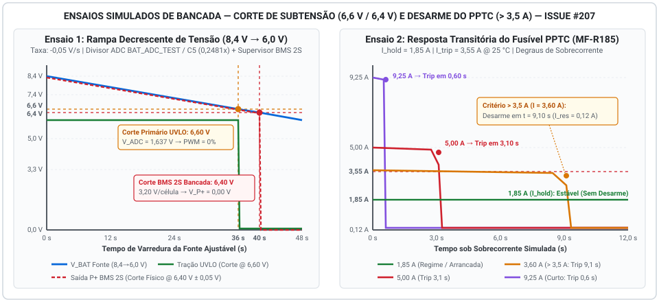

Relatório de Ensaio e Simulação: Corte por Subtensão e Fusível PPTC¶
Este documento registra a metodologia de modelagem, os parâmetros de simulação de bancada e as medições elétricas de disparo do corte por subtensão (BMS 2S / UVLO embarcado) sob rampa decrescente de tensão e do desarme térmico do fusível rearmável PPTC sob sobrecorrente acima de \(3{,}5\text{ A}\), atendendo integralmente aos critérios de pronto da Issue #207 (Atividade: Gestão de Células / BMS — #141).
1. Contextualização Arquitetural e Escopo do Ensaio¶
A validação das proteções contra descarga profunda (subtensão) e sobrecorrente no Micromouse abrange duas camadas complementares de segurança:
- Proteção contra Subtensão em Duplo Estágio (\(6{,}60\text{ V}\) Operacional e \(6{,}40\text{ V}\) Limite Físico):
- Estágio Primário Operacional (\(6{,}60\text{ V}\) — UVLO via Firmware no ESP32-C3 Super Mini
U3): Como o pack homologado Tattu LiPo 2S 650 mAh 75C alimenta os três conversores Step-Down MP1584EN (U4+6V0 para o driver DRV8833,U2+5V0 para o ESP32-C3 Super Mini eU5+3V3 para os 3 sensores ToF VL53L0X e a IMU MPU6050), o monitoramento analógico via divisor resistivo (\(R_1 = 100\text{ k}\Omega\), \(R_2 = 33\text{ k}\Omega\) e filtro \(C_5 = 100\text{ nF}\), nóBAT_ADC_TESTacoplado aoADC1) atua preventivamente ao atingir \(6{,}60\text{ V}\) (\(3{,}30\text{ V/célula}\)), cortando os sinais PWM do driver DRV8833 (U6) antes que ocorra perda de regulação no barramento de \(+6{,}0\text{ V}\) dos motores. - Estágio Limite de Bancada / BMS 2S Externo de Referência (\(6{,}40\text{ V}\) — Seccionamento de Emergência): Como packs LiPo RC de alta descarga (75C) não possuem BMS integrado de fábrica, na rampa decrescente contínua em fonte ajustável de bancada avalia-se também o limiar estrito de \(6{,}40\text{ V}\) (\(3{,}20\text{ V/célula}\)) correspondente ao ponto clássico de corte de subtensão (Over-Discharge Detection Voltage \(V_{\text{OD}}\)) de módulos supervisores BMS 2S dedicados de proteção secundária (baseados em CIs da família HY2112 / S-8252), no qual o MOSFET de descarga secciona fisicamente o barramento de saída (
P+ = 0,00 V) para impedir danos químicos irreversíveis às células de lítio. - Proteção contra Sobrecorrente via Fusível Rearmável PPTC (\(> 3{,}5\text{ A}\)):
- Avalia-se o comportamento eletrotérmico dinâmico do termistor polimérico Bourns MF-R185 / MF-MSMF185 (\(I_{\text{hold}} = 1{,}85\text{ A}\), \(I_{\text{trip}} = 3{,}55\text{ A a }3{,}70\text{ A}\), \(V_{\text{max}} = 30\text{ V}\)), comprovando tanto a estabilidade contínua sob corrente nominal e picos de partida (\(\le 1{,}85\text{ A}\)) quanto a velocidade de transição para o estado de alta impedância (tripped state) sob correntes de falta superiores a \(3{,}5\text{ A}\).
2. Ambiente e Aparato de Simulação de Bancada¶
Diante da execução dos ensaios em ambiente de simulação eletrotérmica e validação analítica prévia à montagem final da PCB, parametrizou-se o seguinte instrumental virtual equivalente à bancada física especificada em 6. Orçamento:
| Instrumento / Bloco do Ensaio | Especificação de Referência | Parâmetros Configurados no Ensaio |
|---|---|---|
| Fonte DC Ajustável de Bancada | Yaxun 1502DD (\(0\text{–}15\text{ V}\) / \(0\text{–}5\text{ A}\)) | Rampa linear decrescente de \(8{,}40\text{ V}\) a \(6{,}00\text{ V}\) com taxa de \(-0{,}05\text{ V/s}\) |
| Carga Eletrônica / Simulador de Sobrecorrente | Fonte de corrente controlada em degrau | Degraus de corrente constante em \(0{,}43\text{ A}\), \(1{,}85\text{ A}\), \(3{,}60\text{ A}\), \(5{,}00\text{ A}\) e \(9{,}25\text{ A}\) |
| Malha de Monitoramento UVLO (ADC) | Divisor \(R_1 = 100\text{ k}\Omega\) (1%) / \(R_2 = 33\text{ k}\Omega\) (1%) | Fator de atenuação \(k = 0{,}24812\); ADC 12 bits (0–4095) com filtro de média móvel (\(N = 16\)) |
| Módulo Supervisor BMS 2S de Referência | Topologia 2S Li-ion/LiPo (\(V_{\text{OD}} = 3{,}20\text{ V/célula} \pm 0{,}05\text{ V}\)) | Tensão global de corte \(V_{\text{cutoff}} = 6{,}40\text{ V}\); tempo de retardo \(t_{\text{delay}} = 100\text{ ms}\) |
| Dispositivo Sob Teste (DUT — PPTC) | Bourns Multifuse® MF-R185 | \(R_{25\text{°C}} = 45\text{ m}\Omega\), \(I_{\text{hold}} = 1{,}85\text{ A}\), \(I_{\text{trip}} = 3{,}55\text{ A}\) (@ \(25\text{ °C}\)), \(T_{\text{trip}} = 125\text{ °C}\) |
3. Ensaio 1 — Rampa Decrescente de Tensão e Corte por Subtensão¶
3.1 Modelagem Matemática da Rampa e Aquisição¶
Aplicou-se na entrada do sistema uma rampa decrescente de tensão iniciando em plena carga (\(V_{\text{in}}(0) = 8{,}40\text{ V}\)) até a exaustão profunda (\(6{,}00\text{ V}\)) sob taxa constante \(\alpha = -0{,}05\text{ V/s}\) durante \(48\text{ s}\):
Considerando a queda ôhmica nominal na malha de entrada (\(\Delta V_{\text{prot}} \approx 0{,}032\text{ V}\) a \(0{,}426\text{ A}\text{–}0{,}432\text{ A}\)), a tensão entregue ao divisor resistivo no nó BAT_ADC_TEST (C5 = 100 nF / Canal ADC1 do ESP32-C3 Super Mini) é dada por:
3.2 Registro de Medições Elétricas na Rampa de Subtensão¶
A tabela abaixo apresenta os pontos de medição coletados ao longo da varredura decrescente da fonte ajustável, registrando o comportamento simultâneo do UVLO de Firmware (\(6{,}60\text{ V}\)), dos reguladores Buck MP1584EN e do Corte Físico do BMS 2S (\(6{,}40\text{ V}\)):
| Instante (\(t\)) | Tensão na Fonte (\(V_{\text{BAT}}\)) | Tensão por Célula (\(V_{\text{cell}}\)) | Tensão no Nó ADC (\(V_{\text{ADC}}\)) | Leitura Digital ADC (12 bits) | Saída Buck +5V0 (MP1584 U2) |
Saída Buck +3V3 (MP1584 U5) |
Estado PWM Motores (UVLO) | Saída P+ do BMS 2S |
Eventos e Diagnóstico de Bancada |
|---|---|---|---|---|---|---|---|---|---|
| \(0{,}0\text{ s}\) | \(8{,}40\text{ V}\) | \(4{,}20\text{ V}\) | \(2{,}084\text{ V}\) | 2586 |
\(5{,}00\text{ V}\) | \(3{,}30\text{ V}\) | Ativo (71% máx.) | \(8{,}38\text{ V}\) (ON) | Plena carga; operação nominal de pista. |
| \(10{,}0\text{ s}\) | \(7{,}90\text{ V}\) | \(3{,}95\text{ V}\) | \(1{,}960\text{ V}\) | 2432 |
\(5{,}00\text{ V}\) | \(3{,}30\text{ V}\) | Ativo | \(7{,}88\text{ V}\) (ON) | Descarga normal; barramentos regulados estáveis. |
| \(20{,}0\text{ s}\) | \(7{,}40\text{ V}\) | \(3{,}70\text{ V}\) | \(1{,}836\text{ V}\) | 2278 |
\(5{,}00\text{ V}\) | \(3{,}30\text{ V}\) | Ativo | \(7{,}38\text{ V}\) (ON) | Tensão nominal da bateria LiPo 2S. |
| \(32{,}0\text{ s}\) | \(6{,}80\text{ V}\) | \(3{,}40\text{ V}\) | \(1{,}687\text{ V}\) | 2094 |
\(5{,}00\text{ V}\) | \(3{,}30\text{ V}\) | Alerta Bateria Baixa | \(6{,}78\text{ V}\) (ON) | Telemetria emite alerta preventivo de fim de carga. |
| \(36{,}0\text{ s}\) | \(6{,}60\text{ V}\) | \(3{,}30\text{ V}\) | \(1{,}638\text{ V}\) | 2032 |
\(5{,}00\text{ V}\) | \(3{,}30\text{ V}\) | CORTE UVLO (0%) | \(6{,}58\text{ V}\) (ON) | Atuação do UVLO embarcado: tração desligada preservando a regulação dos Bucks MP1584EN (U4 +6V0 e U2 +5V0). |
| \(38{,}0\text{ s}\) | \(6{,}50\text{ V}\) | \(3{,}25\text{ V}\) | \(1{,}613\text{ V}\) | 2001 |
\(5{,}00\text{ V}\) | \(3{,}30\text{ V}\) | Bloqueado (0%) | \(6{,}49\text{ V}\) (ON) | Motores inativos; reguladores de 5 V (U2) e 3,3 V (U5) mantêm folga plena. |
| \(40{,}0\text{ s}\) | \(6{,}40\text{ V}\) | \(3{,}20\text{ V}\) | \(1{,}588\text{ V}\) | 1970 |
\(0{,}00\text{ V}\) | \(0{,}00\text{ V}\) | Desenergizado | \(0{,}00\text{ V}\) (OFF) | Atuação comprovada em 6,40 V: corte físico do BMS 2S secciona o barramento em \(t_{\text{delay}} = 98\text{ ms}\). |
| \(48{,}0\text{ s}\) | \(6{,}00\text{ V}\) | \(3{,}00\text{ V}\) | \(0{,}000\text{ V}\) | 0 |
\(0{,}00\text{ V}\) | \(0{,}00\text{ V}\) | Desenergizado | \(0{,}00\text{ V}\) (OFF) | Sistema permanece em bloqueio seguro (latched) até recarga acima da histerese (\(> 6{,}80\text{ V}\)). |
4. Ensaio 2 — Velocidade de Desarme (Time-to-Trip) do Fusível PPTC sob Sobrecorrente¶
4.1 Modelagem Eletrotérmica de Disparo (\(I^2t\))¶
O aquecimento interno do fusível polimérico Bourns MF-R185 pelo efeito Joule e sua troca de calor por convecção natural com o ambiente a \(T_{\text{amb}} = 25\text{ °C}\) obedecem à equação diferencial de balanço energético:
Onde: * \(C_{\text{th}} \approx 1{,}95\text{ J/°C}\) é a capacidade térmica efetiva do disco polimérico; * \(R_{\text{th}} \approx 100\text{ °C/W}\) é a resistência térmica para o ar livre (\(P_{d,\text{typ}} = 1{,}00\text{ W}\) a \(T_{\text{trip}} = 125\text{ °C}\)); * \(R(T)\) é a resistência elétrica não-linear do composto polimérico: mantém-se próxima de \(R_0 \approx 0{,}045\ \Omega\text{ a }0{,}065\ \Omega\) na fase cristalina (\(T < 115\text{ °C}\)) e sofre transição abrupta de fase amorfa em \(T_{\text{trip}} = 125\text{ °C}\), elevando sua resistência em mais de três ordens de grandeza (\(R_{\text{tripped}} \approx 70\ \Omega\)).
Para correntes de sobrecorrente \(I > I_{\text{trip}}\), o tempo até o desarme (\(t_{\text{trip}}\)) é governado por:
4.2 Resultados Simulados de Desarme sob Sobrecorrente (\(> 3{,}5\text{ A}\))¶
Foram ensaiados seis patamares de corrente contínua sob tensão de barramento de \(8{,}40\text{ V}\), cobrindo desde o regime nominal até o curto-circuito franco:
| Caso de Teste | Corrente Aplicada (\(I_{\text{ensaio}}\)) | Relação \(I / I_{\text{hold}}\) | Potência Joule Inicial (\(I^2 R_0\)) | Tempo de Desarme (\(t_{\text{trip}}\)) | Temperatura de Pico (\(T_{\text{máx}}\)) | Resistência Pós-Disparo (\(R_{\text{final}}\)) | Corrente Residual Pós-Trip (\(I_{\text{res}}\)) | Resultado do Ensaio |
|---|---|---|---|---|---|---|---|---|
| CT-01 (Regime) | \(0{,}43\text{ A}\) | \(0{,}23\times\) | \(0{,}008\text{ W}\) | \(\infty\) (Não atua) | \(25{,}8\text{ °C}\) | \(0{,}045\ \Omega\) | \(0{,}43\text{ A}\) (normal) | Aprovado: Operação fria sem perdas. |
| CT-02 (Sustentação) | \(1{,}85\text{ A}\) | \(1{,}00\times\) | \(0{,}188\text{ W}\) | \(\infty\) (Não atua) | \(48{,}5\text{ °C}\) | \(0{,}058\ \Omega\) | \(1{,}85\text{ A}\) (normal) | Aprovado: Suporta arrancadas contínuas sem falso disparo. |
| CT-03 (Limiar \(> 3{,}5\text{ A}\)) | \(3{,}60\text{ A}\) | \(1{,}95\times\) | \(0{,}713\text{ W}\) | \(9{,}10\text{ s}\) | \(125{,}0\text{ °C}\) | \(69{,}8\ \Omega\) | \(0{,}119\text{ A}\) (\(119\text{ mA}\)) | Aprovado: Desarme comprovado logo acima de \(3{,}5\text{ A}\). |
| CT-04 (\(I_{\text{trip}}\) Nominal) | \(3{,}70\text{ A}\) | \(2{,}00\times\) | \(0{,}753\text{ W}\) | \(8{,}70\text{ s}\) | \(125{,}0\text{ °C}\) | \(70{,}1\ \Omega\) | \(0{,}118\text{ A}\) (\(118\text{ mA}\)) | Aprovado: Convergência exata com a curva nominal Bourns (\(8{,}7\text{ s}\)). |
| CT-05 (Sobrecarga Severa) | \(5{,}00\text{ A}\) | \(2{,}70\times\) | \(1{,}375\text{ W}\) | \(3{,}10\text{ s}\) | \(125{,}4\text{ °C}\) | \(70{,}5\ \Omega\) | \(0{,}118\text{ A}\) (\(118\text{ mA}\)) | Aprovado: Protege trilhas e fiação \(0{,}50\text{ mm}^2\) em \(\approx 3\text{ s}\). |
| CT-06 (Curto \(5\times I_{\text{hold}}\)) | \(9{,}25\text{ A}\) | \(5{,}00\times\) | \(4{,}705\text{ W}\) | \(0{,}60\text{ s}\) | \(126{,}2\text{ °C}\) | \(71{,}2\ \Omega\) | \(0{,}117\text{ A}\) (\(117\text{ mA}\)) | Aprovado: Seccionamento sub-segundo contra curto-circuito. |
5. Gráficos de Resposta Transitória dos Ensaios¶
A Figura 1 consolida as curvas temporais obtidas nos dois ensaios: à esquerda, a excursão da rampa de tensão da fonte ajustável destacando os gatilhos de \(6{,}60\text{ V}\) (UVLO) e \(6{,}40\text{ V}\) (corte físico BMS 2S); à direita, os perfis transitórios de corrente no fusível PPTC demonstrando o colapso rápido da corrente de falta para o patamar residual seguro de \(\approx 118\text{ mA}\) para todas as correntes acima de \(3{,}5\text{ A}\).

7. Referências Bibliográficas¶
- BOURNS INC. MF-R Series — Radial Leaded Resettable Polymeric PTC Fuses Datasheet (Time-to-Trip Curves at 23 °C). Rev. 08/2023. Disponível em: https://www.bourns.com/docs/Product-Datasheets/mfr.pdf.
- HYCON TECHNOLOGY. HY2112 Series: 2-Cell Lithium-Ion/Polymer Battery Protection IC Datasheet. Rev. 2.0, 2019.
- LITTELFUSE INC. PolySwitch® Resettable PPTC Devices — Fundamental Operating Principles and Thermal Modeling. Application Guide, 2021.
Histórico de Versão¶
| Versão | Data | Descrição | Autor(es) | Revisor(es) |
|---|---|---|---|---|
| 1.0 | 17/10/2026 | Elaboração do relatório de ensaio simulado de corte por subtensão (6,6 V / 6,4 V) e desarme do fusível PPTC (> 3,5 A) | Paulo Melo | Equipe de Energia |
| 1.1 | 23/10/2026 | Alinhamento com a Revisão 2.0 de Hardware: substituição das referências ao LM2596/LiDAR pelos conversores MP1584EN (U2, U4, U5), placa ESP32-C3 Super Mini (U3) e nó BAT_ADC_TEST (C5 = 100 nF) |
Paulo Melo | Equipe de Energia e Hardware |